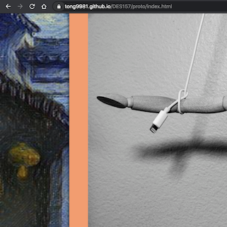
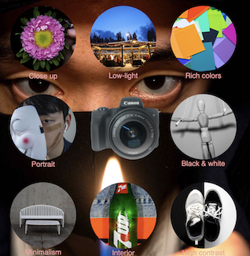

Observations
First of all, I noticed that my web design behaves slightly differently on different browsers. This is the first time I noticed this problem. Under normal circumstances, I just use Google Chrome as my main browser. When I adjust the layout and elements of the webpage, I basically just use the performance of the webpage on Chrome as a reference. In today's user test session, I saw how the webpage behaves on different browsers. I also found that I don't know if it's caused by the screen size. In some testers' screens, some elements in the web page are different from what I expected. I think in the future design, I should test the operation of web pages in different browsers and screens of different sizes.

The second observation is also related to the size of the screen and the picture. In my user test, I found that in some situations, the length of some pictures in my webpage exceeds the size of the screen. In my webpage, I did not modify the shape of the image too much in order to ensure the integrity and rationality of the image. Probably due to the large computer screen I use, I have no problem checking these images. Second, one tester thought I should reduce the area of the image border to leave more space for the image itself. Also, some testers thought I could use a more distributed and balanced layout for the image navigation at the top of the page.
The last observation was about the harmony between the background and the body of the page. Some of my testers were very pleased with my background design. These testers thought that my background image made my entire page special and personal. In particular, the switching between different backgrounds makes the content of the page richer and more artistic. But one tester argued otherwise. The tester thought the background of my web page was too complicated. She suggested that I use a simpler background to make the theme stand out. In fact, I think both of them have very good points. In my project, I added a prominent frame to each image in order to distinguish the image from the background. When I was designing the page, I wanted to use more elements to make the page richer, but some testers thought I should make choices based on the focus of the page and highlight the theme of the page.

Optimization
In the next two days, I will focus on adjusting the overall layout of the page. First, I will adjust the size of the picture appropriately. Secondly, I still have some animation designs that have not been finished yet. I will also add some animation effects to the pictures. Finally, I will consider reducing the presence of the background of the page.